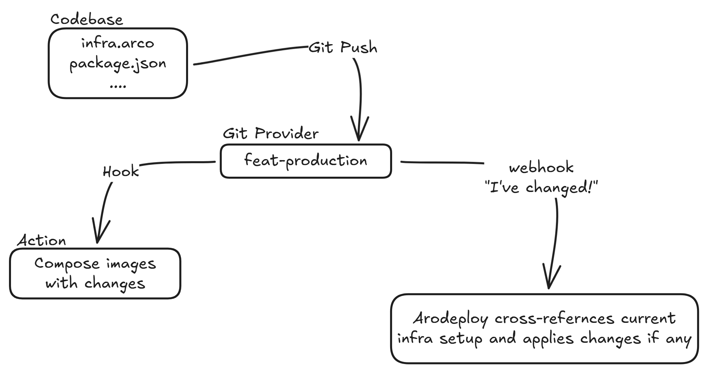

// infrastructure at cost
Deploy smarter.
Scale for less.
Cut your hosting overhead while exposing the full stack. From networking to runtime, without sacrificing usability.
Why
Arodeploy is built around a pricing model that doesn't punish growth. Compute is billed at a flat, predictable rate. No per-seat fees, no per-organisation tiers, no surprise multipliers. Bandwidth is priced leniently, so a traffic spike doesn't become a billing spike. GPU workloads can be added and deployed as simply as any Docker container. Private networking is first-class, every setup ships with direct firewall access, and every layer of configuration stays in your hands. From routing and load balancing down to fine-tuning the environment for your exact workload, without sacrificing one click deployments or the convenience that make modern tools easy.
About
Arodeploy started with a simple frustration: hosting costs. Running services on bare metal was significantly cheaper, but the tooling needed to do it well was largely absent for small teams and individual developers. The platform is built to give full control over infrastructure at a fraction of typical PaaS cost, and is designed to grow well beyond simple app deployment.
As the platform matures, the aim is to make it source-available, keeping development transparent and giving the community a clear view of how it works.
The goal is to create ARCO ('Arodeploy Infrastructure Resource Configuration') , a declarative configuration layer for defining an entire platform, from infrastructure and containers to routing, load balancing, and deployment behaviour. No managed abstractions hiding what is actually happening underneath.
It will treat infrastructure as a living component of your application, rather than a static backdrop. By implementing GitOps-driven, declarative workflows, we can establish a repository as a single source of truth for an entire environment.
The result of this is a platform that is entirely reproducible and auditable. Removing the need for opaque, managed abstractions while providing the granular control needed to scale complex systems with absolute certainty.
Through reusable templates and custom definitions, it can support everything from a simple WordPress site to more intricate distributed systems, making the platform flexible for a wide range of use cases.
ARCO
Arodeploy Resource Configuration; a declarative config that defines your entire platform in one place.
// example only — does not reflect
// final production
syntax
[ { "name": "server1", "type": "server", "hardware": "s2", "ip": "10.0.0.3", "software": "docker", "compose": "./docker-compose.yml" }, { "name": "server2", "type": "server", "cpu": 4, "ram": "8GB", "disk": "80GB", "ip": "10.0.0.4", "software": "docker", "image": "ghcr.io/my-org/api:latest", "env": "./envs/production.env" }, { "name": "lb", "type": "load-balancer", "targets": ["server1", "server2"], "algorithm": "round-robin", "port": 443 }, { "name": "internal-net", "type": "network", "cidr": "10.0.0.0/24", "firewall": { "allow-inbound": [22, 443], "allow-internal": true } }, { "name": "db-volume", "type": "volume", "size": "20GB", "attach": "server1", "mount": "/var/lib/postgres" }, { "name": "gpu-worker", "type": "server", "cpu": 8, "ram": "32GB", "disk": "200GB", "gpu": true, "ip": "10.0.0.10", "software": "docker", "image": "ghcr.io/my-org/ml-worker:latest", "tags": ["gpu", "ml"] }, { "name": "routing", "type": "routing", "rules": [ { "domain": "api.my-org.com", "target": "lb", "port": 443, "tls": true }, { "domain": "internal.my-org.com", "target": "server1", "port": 8080, "tls": true, "private": true } ] } ]
Arodeploy listens to your Git provider, detects infrastructure-relevant changes, builds the affected images, and applies only the updates your deployment needs.

Example projects
Services and platforms being built on top of Arodeploy infrastructure. None of these are in production yet.
work in progress — not yet in productionWireGuard-based private network access hosted entirely on Arodeploy infrastructure. Self-managed, zero third-party routing, with direct firewall control per node.
Work in progressSelf-hosted LLM inference via Ollama running on dedicated GPU nodes. Deploy open models at hardware cost with no per-token pricing. Exposed as a simple API endpoint.
Work in progressManaged Minecraft server hosting with automated backups, custom JVM tuning, and modpack support. Spun up as a standard container with persistent volumes.
Work in progressOptimised Next.js deployment with CDN caching, edge function support, and incremental static regeneration out of the box. Tuned for cold start performance and global latency.
Work in progressTrust
EU-first by design. Choose your region explicitly, with full transparency about where your data sits.
Arodeploy is built as an EU-first alternative to hyperscalers and US-headquartered PaaS providers. As a Swedish company, our legal base, default infrastructure, and core compliance posture are all rooted in the European Union. GDPR compliance is not a feature to be added; it is the baseline.
That said, region choice is yours. Servers can be deployed in EU (default), US East, US West, or Singapore. When you deploy outside the EU, data for that workload resides in that region and falls outside EU jurisdiction. This is visible, explicit, and never hidden behind managed abstractions. You choose the region; we make the implications clear.
For teams with strict data residency requirements, EU-only deployments are fully supported. For teams that need global reach, the same platform and tooling works across all regions without changing your workflow.
EU deployments process and store all data within the EU by default. GDPR compliance applies to all EU-region workloads. Data in US East, US West, or Singapore regions is scoped to that jurisdiction.
Information security management system certification. Audit and certification planned prior to general availability.
Independent audit covering security, availability, and confidentiality. Targeted for completion in the first full year of operation.
EU Network and Information Security Directive 2 alignment for critical infrastructure and cloud service obligations.
Contact
Questions, feedback, or just want to know more? Reach out directly.
aaron.gotthardsson@gmail.com